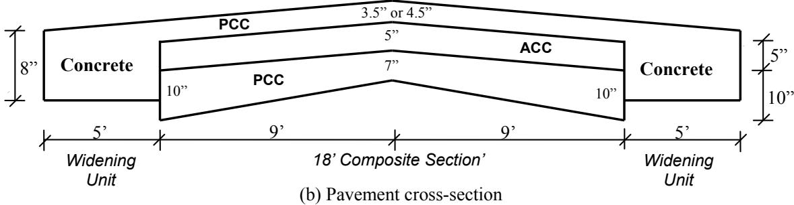
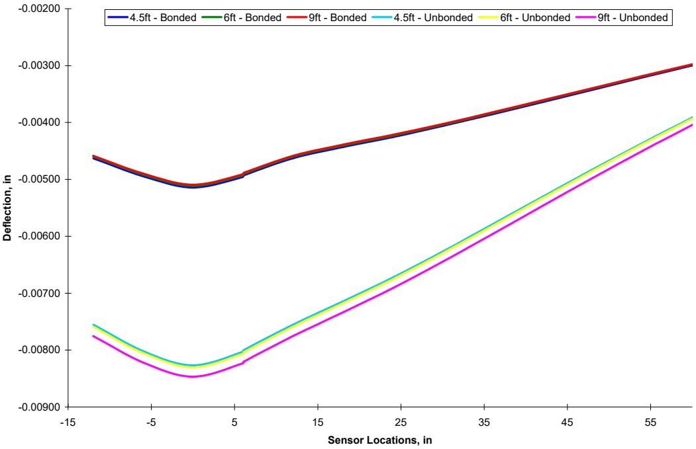
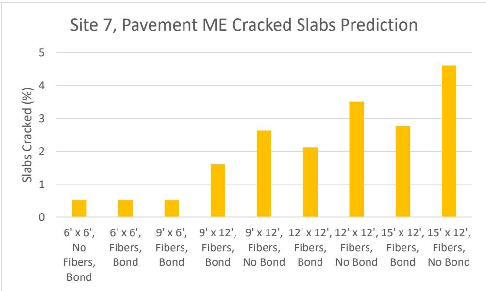

Concrete Overlay
Concrete overlay is a pavement rehabilitation technique that involves placing a new layer of Portland cement concrete over an existing asphalt or concrete surface to extend service life and improve structural performance. These systems function as either composite structures, where the new slab adheres structurally to the substrate, or independent slabs, where a separation layer prevents shear transfer and allows for relative movement between layers [1] [2] [3] [4]. The mechanical interaction at the interface significantly influences stress distribution and deflection under traffic loads, with bonded configurations generally exhibiting lower stresses than unbonded ones [3]. Design relies on mechanistic principles that evaluate structural response to traffic and environmental loads, requiring careful consideration of material properties, slab thickness, joint spacing, and subgrade support conditions [1] [3]. Thermal curling and shrinkage stresses drive joint activation and potential debonding, while reinforcement strategies such as fiber incorporation or internal curing can enhance durability by controlling crack width and reducing early-age moisture loss [5] [6] [7].
CP Tech Center reports covering “Concrete Overlay” also include the following subtopics: Bonded Concrete Overlay on Asphalt (BCOA), Bonded Concrete Overlay on Concrete (BCOC), Geotextile Bond Breaker, Iowa Direct Shear Method, Thin Whitetopping, Unbonded Concrete Overlay on Asphalt (UBCOA), Unbonded Concrete Overlay on Concrete (UBCOC), and Unbonded Concrete Overlay.
Concrete overlays restore pavement performance by adding a new Portland cement concrete layer, with the specific classification determined by how that layer interacts with the existing substrate. Bonded Concrete Overlay on Asphalt (BCOA) and Bonded Concrete Overlay on Concrete (BCOC) both form unified composite structural systems through chemical and mechanical adhesion to the underlying asphalt or concrete, thereby restoring load-bearing capacity as a single unit. In contrast, Unbonded Concrete Overlay on Asphalt (UBCOA), Unbonded Concrete Overlay on Concrete (UBCOC), and the general Unbonded Concrete Overlay place new concrete layers over existing pavements without relying on shear bonding to restore structural capacity or surface quality. This separation is facilitated by a Geotextile Bond Breaker, which acts as a permeable layer preventing composite action between the new concrete and the old pavement. The distinction between these bonded and unbonded systems relies on the Iowa Direct Shear Method, a laboratory assessment that measures shear bond strength to determine structural integrity. Finally, Thin Whitetopping functions as a specific overlay application by placing a relatively thin concrete layer over existing pavement to restore riding quality and structural integrity without requiring full reconstruction.
Sources (13)
Sub-concepts (8)
Fundamentals
Concrete overlays function as composite pavement systems where the structural integrity depends on the mechanical interaction between the new cementitious layer and the existing substrate. The performance of these structures is governed by the balance between bond strength and stress relief mechanisms, which determine whether the layers act integrally or independently under traffic loads. Durability in cementitious overlays relies on effective hydration processes that minimize shrinkage and permeability to prevent early-age cracking and maintain long-term structural capacity [7].
The following figure illustrates the compressive strength test results that validate these durability mechanisms.
 Compressive strength test results [7]
Compressive strength test results [7]
The figure plots compressive strength in psi against age in days for concrete mixtures from Washington and Winneshiek counties, comparing standard curing (CC) with internal curing (IC). Using LWFA appeared to improve the compressive strength of both mixture designs, particularly at 90 days.
Key findings
- Concrete overlays function as composite structures where interface bonding significantly reduces deflections and stresses compared to unbonded conditions, though temperature differentials can induce shear stresses that exceed bond strengths [3].
- Concrete overlays offer favorable life-cycle cost savings and extended service lives compared to asphalt resurfacing, but performance is heavily dependent on strict quality control during construction to prevent debonding and deterioration [8].
- Internal curing using lightweight fine aggregate enhanced the long-term durability and dimensional stability of concrete overlays by improving early-age hydration, reducing permeability, and mitigating cracking risks under extreme environmental gradients [7].
- Concrete overlay construction faces inherent trade-offs between achieving tight vertical tolerances for smoothness and managing concrete yield, with stringless paving control systems enabling superior ride quality but requiring precise pre-construction surveying [4].
- Geotextile bond breakers provided significant cost savings over traditional asphalt separation layers while successfully preventing interlayer bonding in unbonded concrete overlay systems [4].
- Concrete overlays present a high-speed rehabilitation solution that facilitates long-life pavement construction by eliminating the need to remove existing pavement, serving as a renewable surface course designed for functional requirements [9].
- Contraction joints in concrete overlays may fail to activate initially or for many years due to insufficient spacing, with the ratio of slab length to radius of relative stiffness serving as a reliable indicator for optimal joint activation behavior [5].
- Concrete overlays that bond to the underlying asphalt layer exhibit significantly higher joint load transfer efficiency and enhanced structural capacity compared to unbonded systems utilizing geotextile separation layers [6].
Concrete Overlay Structural Behavior and Design
Evidence: 13 reports (13 primary)
Concrete overlays function as composite pavement structures where the mechanical interaction between the new concrete layer and the underlying substrate is critical to overall performance [3]. The degree of bonding at the interface significantly influences stress distribution and deflection, with bonded systems generally exhibiting lower stresses and deflections compared to unbonded configurations under vertical loads [3]. Concrete overlay design fundamentally relies on mechanistic principles that evaluate the structural response of the composite pavement system under traffic and environmental loads [3].
The following figure illustrates the resulting deflected shape of such a composite pavement structure under loading.
 Example of composite pavement deflected shape (9-kip load) (cross-section view—exaggerated scale) [3]
Example of composite pavement deflected shape (9-kip load) (cross-section view—exaggerated scale) [3]
The figure displays a cross-sectional view of a multi-layered pavement structure subjected to loading, showing the resulting deformation. A color gradient ranging from blue (MN) on the left to red (MX) on the right indicates the magnitude of deflection across the length of the slab.
Research problem — Existing design procedures lack the mechanistic capabilities required to reliably predict structural performance under combined traffic and environmental loads, particularly regarding interface bonding conditions that significantly influence deflection and stress levels [3] [9]. Design methodologies must address the complex trade-offs between overlay thickness, joint spacing, and bond conditions to prevent premature distresses such as reflective cracking, debonding, and inadequate load transfer efficiency [10] [6] [3]. There is a critical need for standardized guidelines that integrate sustainability parameters and account for the structural contribution of underlying layers to ensure long-term durability across diverse rehabilitation scenarios [2] [9].
The figure below illustrates the International Roughness Index performance history of UBCOA, categorized by concrete overlay joint spacing.
 IRI performance history categorized by concrete overlay joint spacing [2]
IRI performance history categorized by concrete overlay joint spacing [2]
The figure plots the International Roughness Index (IRI) against pavement age for unbonded concrete overlays (UBCOA), comparing data points and linear trends for three different transverse joint spacings. The IRI values trend line for 12-ft transverse joint spacing increased gradually and remained below 170 in/mi during the first 22 years of service life. This data illustrates how specific design parameters, such as joint spacing, influence the long-term structural performance and durability of concrete overlay rehabilitation systems.
State of the art — The field has transitioned from empirical design methods to mechanistic-empirical procedures that utilize sophisticated three-dimensional finite element modeling to predict composite pavement behavior, accounting for complex interface interactions and thermal effects [3] [9]. Current analysis establishes that interface bond condition is a critical performance factor, with bonded systems significantly enhancing joint load transfer efficiency compared to unbonded configurations, suggesting that bonding benefits should be prioritized in design regardless of the intended separation layer [6] [3]. Design optimization for thin overlays relies on balancing slab length relative to stiffness and incorporating fiber reinforcement to control crack widths and mitigate reflective cracking, while emerging frameworks employ total systems analysis to optimize variables such as joint spacing and mix design [5] [10] [3].
The following figure illustrates the temperature differentials applied to the composite pavement.
 Temperature differentials applied to the composite pavement [3]
Temperature differentials applied to the composite pavement [3]
The figure displays two schematic cross-sections of a composite pavement structure consisting of an asphalt concrete (ACC) layer sandwiched between two Portland cement concrete (PCC) layers.
Findings from the reports
- Temperature differentials generate normal tensile stresses at the interface that can exceed typical bond strengths, posing a high risk of debonding even when vertical traffic loads produce lower shear stresses [11] [3].
- Three-dimensional finite element modeling accurately predicts the structural behavior of composite overlays, with field validation confirming that analytical deflection profiles align with measured data when appropriate subgrade moduli are used [11] [3].
- Structural fiber reinforcement effectively reduces crack widths and prevents mid-slab transverse cracking in sections with extended joint spacing, though it does not significantly impact load transfer efficiency or smoothness metrics [10] [6].
- Geotextile bond breakers function as effective separation layers for unbonded overlays while offering significant cost savings compared to traditional asphalt-based separation methods [1] [4].
- Composite concrete overlays function as shallow shells where widened edge sections provide lateral confinement that significantly reduces maximum deflections compared to non-widened configurations [11].
- Interface bonding critically determines structural performance, with unbonded layers exhibiting substantially higher deflections and tensile stresses in the underlying asphalt layer than fully bonded systems under static loading [3].
- The underlying asphalt layer accumulates significant fatigue damage in unbonded whitetopping systems, whereas the concrete overlay remains structurally sound with negligible fatigue consumption under modeled conditions [3].
- Joint spacing is the predominant factor governing joint activation rates, with longer spacings leading to faster and more complete activation due to increased shrinkage and curling stresses [5].
- Internal curing using lightweight fine aggregate mitigates early-age warping and curling by buffering moisture movements, resulting in improved dimensional stability and long-term life-cycle cost savings despite higher initial construction costs [7].
Novelty & rigor — Novel finite element frameworks have been developed to explicitly model the structural interaction between new concrete overlays and existing widening units, capturing lateral confinement and arch action effects that standard reviews typically overlook [11]. Mechanistic design procedures now incorporate partial bonding phenomena and probabilistic reliability, moving beyond traditional fully bonded assumptions to optimize pavement thickness and joint spacing based on field-calibrated stress correction factors [3]. Reproduction of these structural analyses requires implementing three-dimensional finite element models calibrated against field deflection data, utilizing specific interface elements to simulate friction and cohesion mechanics under varying thermal and traffic loads [11] [3].
The figure below illustrates various joint spacing configurations for composite pavements based on these mechanistic design procedures.

Schematic of a composite pavement cross-section showing the dimensions and layering of concrete widening units and an asphalt-concrete overlay. [3]The figure displays a schematic cross-section of a composite pavement structure, illustrating how new widening units are integrated with existing layers to form a unified system. This configuration represents a concrete overlay application where the structural interaction between the new slab and the substrate is critical for performance under traffic loads. The diagram details specific geometric parameters, such as layer thicknesses and widths, which are essential for mechanistic design procedures that evaluate structural response.
Reported values
| Parameter | Value | Context | Source |
|---|---|---|---|
| availability timeline for Overlay Packet | 5-6 weeks | Overlay Packet availability | [1] |
| recyclability | 100% | concrete overlays | [1] |
| fiber reinforcement dosage | 4 lb/yd3 | fiber-reinforcement level tested for joint activation effects | [5] |
| slab length to radius of relative stiffness ratio (L/ℓ) | 4 and 7 | optimal design range for joint activation balance | [5] |
| design porosity | 20% | pervious concrete pavement in terms of clogging consideration | [12] |
| OBSI noise level | 98 dBA | pervious concrete overlay, Cell 39 driving lane trial | [12] |
| overlay depth | 3.5 in. | overlay without fiber inclusion | [10] |
| average backcalculated effective thickness | 10.0 in. | Average across sections | [6] |
| average joint LTE | 44.9% | COC–U overlay sections plus COA overlay with geotextile separation layer | [6] |
| average bond strength | 155 to 302 psi | concrete overlays | [3] |
| deflection increase | 61%–66% | unbonded layers | [3] |
| cost savings | 67% | geotextile bond breakers vs traditional asphalt bond breakers | [4] |
| flexural strength | 350 psi | concrete overlay after paving | [4] |
| overlay depth | 3–4.5-inch | conventional mixes with poly fibers | [13] |
| overlay depth | less than 3.5 inches | construction requiring strict depth control and fiber inclusion for reliability | [13] |
21 more distinct values omitted here; the full span-verified set is in the quantities sidecar.
Across the reviewed reports, concrete overlays function as composite systems where interface bonding critically determines structural behavior, with bonded configurations significantly reducing deflections and stresses compared to unbonded designs that exhibit substantially higher tensile stresses in underlying layers. While vertical traffic loads typically induce interface shear stresses well below bond strengths, temperature differentials can generate normal tensile stresses exceeding these limits, posing a high risk of debonding that necessitates careful design considerations for partial bonding conditions. Design methodologies vary in their treatment of interfacial bonding and fatigue reliability, with some approaches utilizing stress correction factors to account for partial bonding while others employ mechanistic-empirical models that may oversimplify responses or lack reliability considerations for lower-type facilities. Field performance data indicates that unbonded overlays often exhibit higher deflections and stresses than bonded ones, yet they can still achieve long-term serviceability if separation layers effectively mitigate reflective cracking and underlying pavement conditions are properly assessed. The structural integrity of these composite pavements is further influenced by geometric factors such as widening sections and joint spacing, which affect load transfer efficiency and stress distributions through mechanisms like arch action and lateral confinement. [2] [11] [6] [3] [8] [9]
The following figure illustrates the comparative deflection behavior between bonded and unbonded concrete overlay configurations.

Comparison of deflections for bonded layers and unbonded layers [3]The figure plots the vertical deflection profiles across sensor locations for a whitetopping overlay system under different joint configurations. It demonstrates that interface bonding significantly affects the deflection behavior of the pavement, with bonded layers exhibiting lower maximum deflections than unbonded ones. The analysis compares extreme cases assuming either full bonding or no bonding between all three layers to investigate composite behavior.
Implications — Designers must account for the significant structural trade-offs of composite action, as bonding increases flexural rigidity but can elevate transverse tensile stresses in underlying layers due to confinement forces [11]. Interface conditions critically dictate structural performance, with unbonded systems exhibiting substantially higher deflections and tensile stresses than bonded states, necessitating rigorous fatigue analysis and adjustment factors for partial bonding [3]. Field evidence suggests that intentional debonding may result in under-designed load transfer relative to traffic demands, implying that the benefits of bonding should be considered in all overlay designs rather than treating bonded and unbonded categories as distinct performance tiers [6]. Future design procedures must transition from empirical methods to mechanistic-empirical models that incorporate partial bonding mechanisms, time-dependent material properties like creep and shrinkage, and the specific effects of fiber reinforcement on joint activation and spacing [9].
The following figure illustrates a partial separation at the widening unit-composite section interface.
 Partial separation at widening unit–composite section interface (cross-section view—exaggerated scale) [3]
Partial separation at widening unit–composite section interface (cross-section view—exaggerated scale) [3]
The figure displays a finite element model of a pavement cross-section, illustrating the structural interaction between an existing composite section and a new widening unit. A visible gap at the interface indicates partial separation, which is analyzed to determine if tie bars are sufficient to ensure load transfer in the absence of aggregate interlocking.
Limitations — Current analytical models often rely on simplifying assumptions that neglect real-world factors such as material non-linearity, existing cracks, and interlayer bond conditions, which limits the accuracy of structural predictions for composite systems [11] [3]. Existing design methodologies lack robust capabilities to account for fiber reinforcement effects on load transfer and curling behavior, while also failing to adequately capture interface stresses induced by temperature differentials that can lead to debonding [6] [3]. There is a recognized deficiency in mechanistic-empirical models for accurately computing critical stresses and deflections in layered systems with discontinuities, alongside an insufficient understanding of interlayer bonding mechanisms required for long-life performance [11] [9].
The following figure illustrates the practical application of these predictive capabilities by showing the PMED predicted cracking at Site 7.

Predicted percentage of cracked slabs at Site 7 based on joint spacing, fiber reinforcement, and interlayer bond conditions. [6]The figure displays the predicted cracking percentages for concrete overlays under various configurations of slab dimensions, fiber content, and bond status. The data demonstrates that increased joint spacing leads to higher cracking rates, while the presence of fibers generally reduces these values compared to unreinforced slabs. The results highlight that assuming no bond between the concrete and asphalt significantly increases the percentage of cracked slabs compared to bonded configurations.
Related concepts
In this hierarchy
- Parent: Preservation & Rehabilitation
- Child: Bonded Concrete Overlay on Asphalt (BCOA)
- Child: Bonded Concrete Overlay on Concrete (BCOC)
- Child: Geotextile Bond Breaker
- Child: Iowa Direct Shear Method
- Child: Thin Whitetopping
- Child: Unbonded Concrete Overlay on Asphalt (UBCOA)
- Child: Unbonded Concrete Overlay on Concrete (UBCOC)
- Child: Unbonded Concrete Overlay
Related by shared evidence
- Concrete Pavement Joint — shares 10 reports
- Thin Whitetopping — shares 10 reports
- Transverse Cracking — shares 10 reports
- Unbonded Concrete Overlay — shares 10 reports
- Falling Weight Deflectometer — shares 9 reports
- Pavement Smoothness — shares 9 reports
- Preservation & Rehabilitation — shares 9 reports
- Bonded Concrete Overlay on Asphalt (BCOA) — shares 8 reports
Similar topics
- Unbonded Concrete Overlay
- Unbonded Concrete Overlay on Concrete (UBCOC)
- Bonded Concrete Overlay on Asphalt (BCOA)
- Concrete Pavement Joint
- Thin Whitetopping
- Joint Spacing Effects on Performance
- Preservation & Rehabilitation
- Composite Pavement
References
- G. Fick and D. Harrington, "Concrete Overlay Field Application Program, Final Report: Volume I," National Concrete Pavement Technology Center, Ames, IA, 2012. [Online]. Available: https://apps.itd.idaho.gov/apps/manuals/Materials/Materials%20References/OverlayFieldAppFinalReport.pdf
- J. Gross, D. King, D. Harrington, H. Ceylan, Y. A. Chen, S. Kim, P. Taylor, and O. Kaya, "Concrete Overlay Performance on Iowa's Roadways (Field Data Report)," National Concrete Pavement Technology Center, Ames, IA, Rep. TR-698, 2017. [Online]. Available: https://www.intrans.iastate.edu/wp-content/uploads/2017/09/Iowa_concrete_overlay_performance_w_cvr.pdf
- J. K. Cable, F. S. Fanous, H. Ceylan, D. Wood, D. Frentress, T. Tabbert, S. Y. Oh, and K. Gopalakrishnan, "Design and Construction Procedures for Concrete Overlay and Widening of Existing Pavements," Center for Portland Cement Concrete Pavement Technology, Iowa State University, Ames, IA, Rep. TR-511, 2005. [Online]. Available: https://www.intrans.iastate.edu/wp-content/uploads/2018/03/oreo_design.pdf
- P. D. Wiegand, J. K. Cable, T. Cackler, and D. Harrington, "Improving Concrete Overlay Construction," National Concrete Pavement Technology Center, Ames, IA, Rep. TR-600, 2010. [Online]. Available: http://publications.iowa.gov/20076/1/IADOT_tr_600_Improving_Concrete_Overlay_Construction_2010.pdf
- J. Gross, D. King, H. Ceylan, Y. A. Chen, and P. Taylor, "Optimized Joint Spacing for Concrete Overlays with and without Structural Fiber Reinforcement," National Concrete Pavement Technology Center, Ames, IA, Rep. TR-698, 2019. [Online]. Available: https://www.intrans.iastate.edu/wp-content/uploads/2019/06/optimized_joint_spacing_for_overlays_w_cvr.pdf
- D. King, B. Yang, P. Taylor, and H. Ceylan, "Field Performance of Fiber-Reinforced Concrete Overlays," Institute for Transportation, Iowa State University, Ames, IA, Rep. TR-816, 2025. [Online]. Available: https://www.intrans.iastate.edu/wp-content/uploads/2025/05/field_performance_of_frc_overlays_w_cvr.pdf
- A. Daghighi, P. Taylor, H. Ceylan, and Y. Zhang, "Impacts of Internally Cured Concrete Paving on Contraction Joint Spacing Phase II," National Concrete Pavement Technology Center, Iowa State University, Ames, IA, Rep. TR-746, 2021. [Online]. Available: https://www.cptechcenter.org/wp-content/uploads/2021/05/IC_concrete_paving_impacts_phase_II_field_impl_w_cvr.pdf
- J. Grove, G. Fick, T. Rupnow, and F. Bektas, "Material and Construction Optimization for Prevention of Premature Pavement Distress in PCC Pavements," National Concrete Pavement Technology Center, Ames, IA, Rep. TPF-5(066), 2008. [Online]. Available: https://www.intrans.iastate.edu/wp-content/uploads/2018/03/mco-final.pdf
- D. Harrington, R. Rasmussen, D. Merritt, T. Cackler, and P. Taylor, "Long-Term Plan for Concrete Pavement Research and Technology—The Concrete Pavement Road Map (Second Generation): Volume II, Tracks (FHWA-HRT-11-070)," National Center for Concrete Pavement Technology, Iowa State University, Ames, IA, 2012. [Online]. Available: https://www.fhwa.dot.gov/publications/research/infrastructure/pavements/pccp/11070/11070.pdf
- J. K. Cable, J. L. Morud, and T. R. Tabbert, "Evaluation of Composite Pavement Unbonded Overlays: Phase III," CTRE, Iowa State University, Ames, IA, Rep. TR-478, 2006. [Online]. Available: https://rosap.ntl.bts.gov/view/dot/24065
- J. K. Cable, M. L. Anthony, F. S. Fanous, and B. M. Phares, "Evaluation of Composite Pavement Unbonded Overlays: Phases I and II," Center for Portland Cement Concrete Pavement Technology, Iowa State University, Ames, IA, Rep. TR-478, 2003. [Online]. Available: https://www.intrans.iastate.edu/research/completed/evaluation-of-composite-pavement-unbonded-overlays-phase-iii-tr-478-hr-1093-proj-2/
- V. R. Schaefer and J. T. Kevern, "An Integrated Study of Pervious Concrete Mixture Design for Wearing Course Applications," National Concrete Pavement Technology Center, Ames, IA, 2011. [Online]. Available: https://www.intrans.iastate.edu/wp-content/uploads/2018/03/pervious_overlay_report_w_cvr.pdf
- J. K. Cable and J. Williams, "Evaluation of Unbonded Ultrathin Whitetopping of Brick Streets," CTRE, Iowa State University, Ames, IA, Rep. TR-466, 2006. [Online]. Available: https://www.intrans.iastate.edu/wp-content/uploads/2018/03/whitetopping.pdf
Feedback on this page